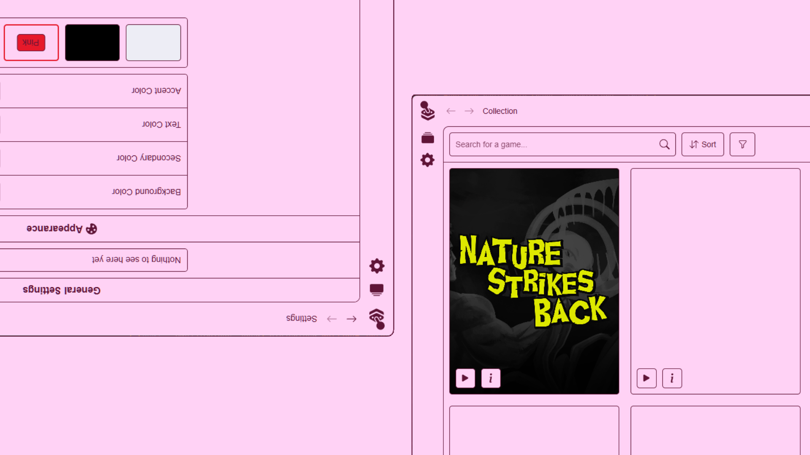

IGS Launcher
IGS Launcher is a simple open-source launcher designed to showcase and play ISEL Game Studios' projects at public events, such as Lisboa Games Week .
Repository

About
When ISEL Game Studios needed a launcher to showcase its games at public events, the goal was to create a simple and intuitive platform that would allow visitors to easily browse and play our games. I focused on making the launcher as user-friendly as possible, ensuring that even non-technical users could navigate it effortlessly.
Developing the launcher in-house also gave us the flexibility to tailor it to ISEL Game Studios' brand identity, creating a more cohesive, polished, and professional experience.
Features
The launcher was built with Electron, together with HTML, CSS and JavaScript, to create a simple and functional interface that would allow users to easily browse and play the showcased games. The launcher also includes a search bar to help users find specific games, as well as a settings menu where users can customize the theme of the launcher.